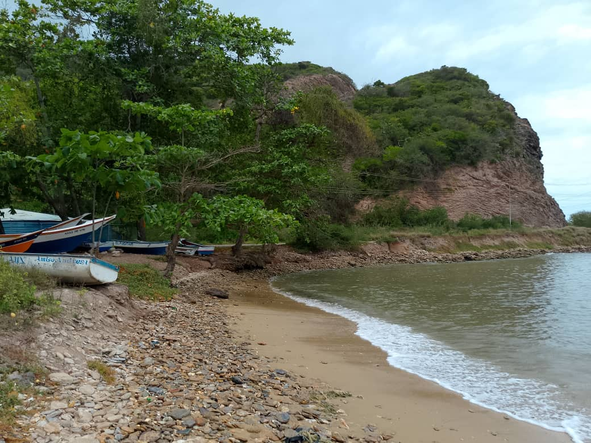
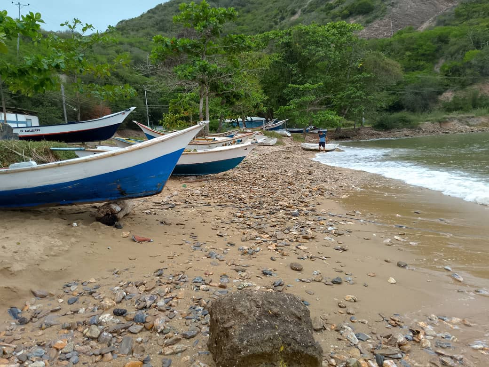
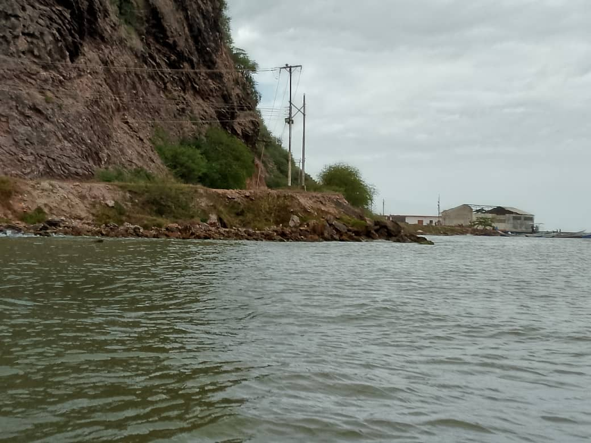
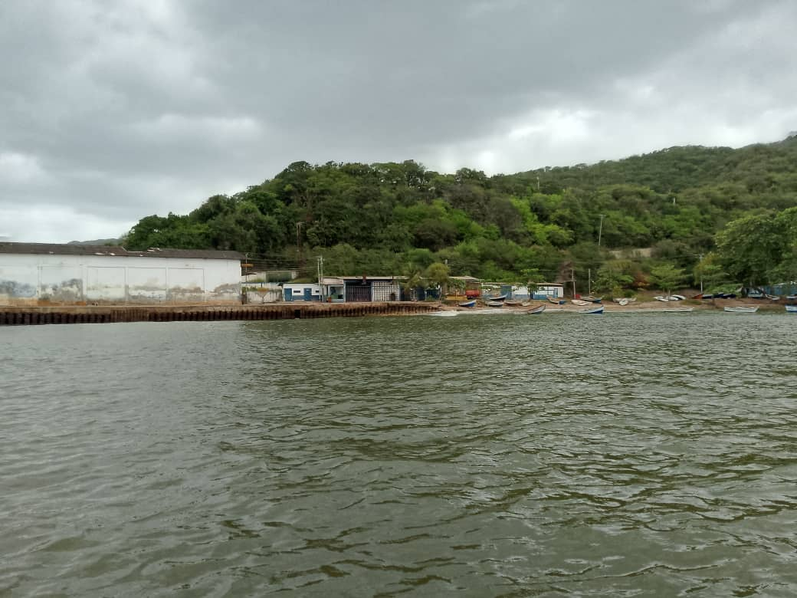
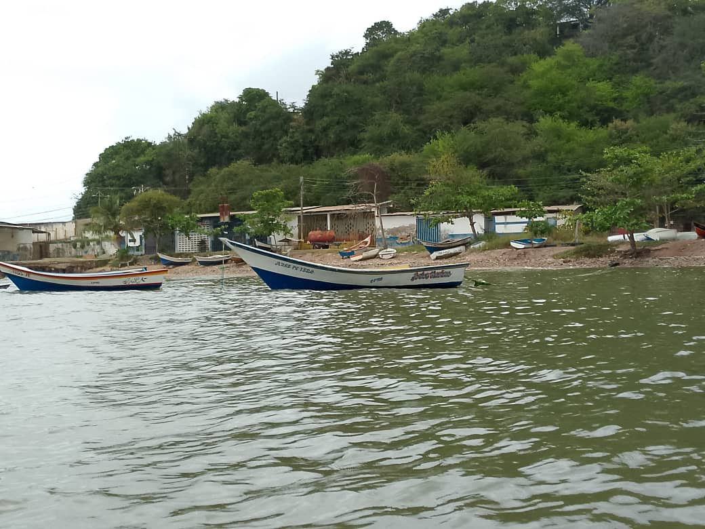
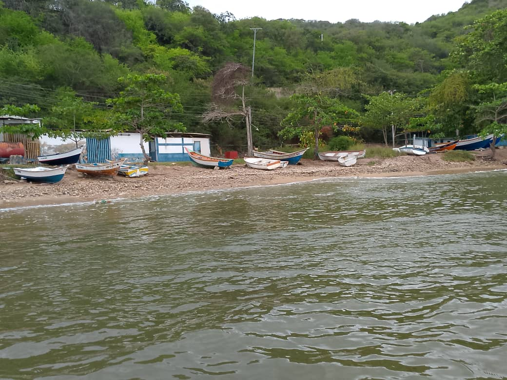

Esta es una playa pequeña y tranquila, alejada del ruido de los grandes destinos turísticos. No es el típico lugar concurrido; su movimiento diario lo marcan los cayucos que salen a pescar. Es, ante todo, un punto de encuentro para la gente del mar. Si buscas ver de cerca cómo es la vida pesquera real de la zona, este es el sitio indicado para observar el trabajo de los locales en un ambiente sencillo y sin pretensiones.




Aunque no es una playa de nado extensivo, tiene un atractivo especial para quienes disfrutan de la recolección marina. En sus áreas rocosas, es común ver a personas con caretas y buscando caracoles y mejillones. Es una actividad tradicional que puedes realizar con respeto al entorno, aprovechando la riqueza de mariscos que se encuentran pegados a las piedras cuando la marea lo permite.

Cómo Llegar
Se ubica dentro del territorio de el tucan. Es el paso peatonal obligado en la ruta hacia el muelle principal de combustible.
Mejores Días
Cualquier dia de la semana, preferiblemente en horarios de la mañana para ver la salida de los cayucos o cuando la marea este baja si deseas recolectar mariscos.
¿Por Qué Visitarla?
Es el lugar ideal para observar la pesca artesanal autentica sin multitudes; podras tomar fotos de botes coloridos, recolectar mariscos en las piedras y disfrutar de un ambiente honesto y funcional.
La Playa del Muelle
Esta playa se encuentra dentro del territorio de El Tucán y tiene una ubicación estratégica. Es el camino necesario que debes recorrer para llegar al muelle donde las lanchas y botes más grandes se detienen a surtir combustible. Por eso, siempre verás un flujo constante de embarcaciones moviéndose cerca, lo que le da un aire de puerto activo y funcional durante todo el día.
Al visitar este sector, ten en cuenta que vienes a un lugar de trabajo y paso. Es ideal para una parada corta, tomar fotos de los botes coloridos o intentar recolectar algo en las rocas. Al no ser un destino masivo, no encontrarás grandes servicios turísticos, pero sí la oportunidad de ver una faceta honesta y real de la costa, lejos de los circuitos comerciales.
